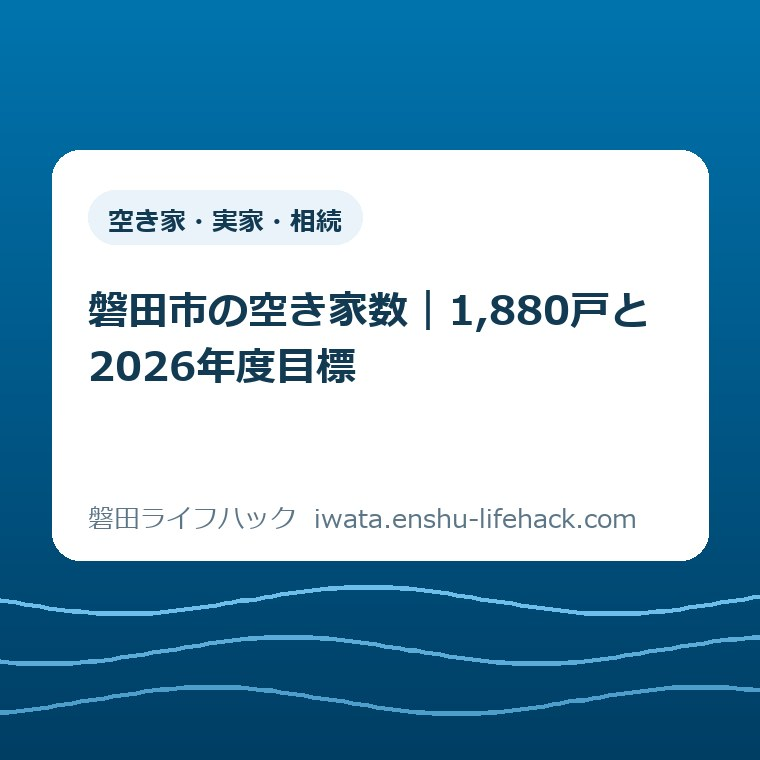

空き家・実家・相続
磐田市の空き家数｜1,880戸と2026年度目標

この記事の要点
Q. 磐田市の空き家は1,880戸で、2026年度には減る予定ですか？
A. 磐田市の1,880戸は現在の全空き家数ではありません。2018年住宅・土地統計調査で「その他住宅」に分類された戸建ての数です。同年の全区分は8,500戸。2026年度目標は、この限定指標を2,000戸未満におさえることで、2026年度の実績は市の掲載ページで未公表です。
導入——1,880戸だけを見て安心しない
磐田市の相続実家を抱えるご家族は、すでに手間を払っています。郵便物を取りに行き、庭木を見て、雨漏りを気にする。遠方なら、往復の時間と交通費も重なります。
空き家の制度や補助の対象は、家の状態と個別条件で変わります。市全体の戸数だけで、ご家族の家がどの区分になるかは決まりません。最後は磐田市の公式ページと担当窓口で確認してください。
その前提で、市全体の規模を確かめます。磐田市空家等対策計画には、戸建て住宅の空き家数として1,880戸が載っています。
ただし、「磐田市の空き家は1,880戸」とだけ書くと不正確です。2018年の全区分の空き家は8,500戸でした。1,880戸は、その中から条件を絞った数字です。
2026年度の目標も、1,880戸から減らす内容ではありません。市が掲げたのは「2,000戸未満におさえる」です。数だけなら、増加を119戸までにとどめても目標内になります。
意外なのは、基準より目標の方が大きいことです。私はこの表を、空き家を減らす約束ではなく、増える勢いを抑える上限として読みます。
この記事では、空き家バンクなどの使い方は繰り返しません。売却前の入口は、磐田市の空き家バンクと空き家おこしプロジェクトの違いで詳しく整理しています。
1,880戸は、2018年の戸建て・その他住宅
磐田市空家等対策計画の1,880戸は、2018年住宅・土地統計調査にある「その他住宅」のうち、戸建て住宅を数えた値です。
住宅・土地統計調査では、空き家を二次的住宅、賃貸用住宅、売却用住宅、その他住宅に分けます。二次的住宅は別荘やセカンドハウスです。
賃貸用住宅は、貸すために空いている住宅です。売却用住宅は、売るために空いている住宅を指します。
その他住宅は、その三つに当てはまらない人の住んでいない住宅です。計画は、転勤や入院などで居住世帯が長く不在の住宅を例に挙げています。
2018年のその他住宅は計欄で2,060戸でした。そのうち戸建て住宅の行が1,880戸です。アパート等の行には170戸とあります。
ここで一つ、資料の表記をそのまま残します。1,880戸と170戸を足すと2,050戸ですが、計欄は2,060戸です。10戸の差をこちらで直さず、公表表の各数値を使います。
1,880戸は、市が一軒ずつ歩いて数えた2026年9月8日時点の実数でもありません。2018年の統計上の区分に基づく値です。

全区分の空き家は8,500戸、空き家率は12.1％
2018年住宅・土地統計調査で、磐田市の住宅総数は70,010戸、全区分の空き家は8,500戸、空き家率は12.1％でした。
8,500戸には、入居者を募集している賃貸住宅も含まれます。売り出し中の住宅や別荘等も入るため、すべてが放置された一戸建てではありません。
1,880戸を8,500戸で割ると約22.1％です。空き家全体の約5戸に1戸が、計画の目標指標に使われる戸建て・その他住宅に当たります。
反対に言えば、空き家全体の約77.9％は1,880戸に入っていません。検索画面で数字だけ拾うと、磐田市の規模を約5分の1に見誤ります。
市の人口と世帯数の動きは、空き家の発生を考える背景になります。2026年7月末の人口と世帯数は、磐田市の人口16万3,224人、7万2,421世帯の記事で確認できます。
人口が減れば、空き家が同じ割合で増えるとは限りません。世帯の分かれ方、新築、賃貸の入退去、解体、売却が同時に動くからです。
したがって、人口の数字と空き家の数字を一本の因果で結びません。どちらも時点と定義を合わせてから読みます。
法の「空家等」と統計の「空き家」は同じではない
磐田市空家等対策計画は、法の「空家等」と住宅・土地統計調査の「空き家」で、集合住宅の数え方が違うと説明しています。
住宅・土地統計調査は、居住者がいる集合住宅でも、空いている一室を一戸の空き家として数えます。
法の定義では、建築物全体が使用されていないことが常態でなければ、その集合住宅は一棟の空家等には当たりません。
統計は市全体の規模を見る道具です。法の区分は、個別の建物に対する管理や対応を判断するときに使われます。
相続した戸建てが1,880戸のどれかに入るかは、統計から判定できません。調査の抽出や分類と、目の前の一軒の事実確認は別です。
家が空いた直後に何をするかは、実家が空き家になったときの確認手順へつなげています。戸数を知ることと、家を守る段取りを混ぜないためです。
2026年度目標は、2,000戸未満におさえる
磐田市空家等対策計画の期間は、2022年度から2026年度までの5年間です。2026年度は計画の最終年度です。
戸建て住宅の空き家数について、市の目標値は「2,000戸未満におさえる」です。定義は、住宅・土地統計調査のその他住宅数からアパートを除いた数です。
基準として置かれた1,880戸と、目標上限の2,000戸の差は120戸です。ただし「未満」なので、整数の最大値は1,999戸になります。
同じ数え方で1,999戸なら、2018年の1,880戸より119戸増です。割合では約6.3％増えていても、目標の範囲内です。
だから、この目標を「2026年度までに空き家を減らす」と言い換えてはいけません。市が置いた線は削減数ではなく、増加を抑える上限です。
2026年9月8日時点で、計画掲載ページには2026年度の実績値がありません。達成したとも、未達だったとも、現段階では言えません。

「現状（R2）」と2018年調査を分けて読む
磐田市の成果目標表は、1,880戸を「現状（R2）」の欄に置いています。一方、同じ計画の内訳表は、この値を2018年調査の数字として示しています。
つまり、2020年度の欄に置かれた基準値と、実際の調査年が一致していません。1,880戸を「2020年に実測した戸数」と書く根拠はありません。
この違いは小さく見えますが、2026年度との間隔を考えるときに効きます。2018年から数えれば8年、2020年度から数えれば6年です。
私は、数字の横に二つの日付を書きます。「2018年調査」「計画表では現状R2」です。どちらか一方を消すと、読者が同じ誤解を繰り返します。
掲載ページの更新日は2026年3月5日です。ただし、計画PDFの表紙は2022年4月で、改定日との記載は確認できませんでした。
ページが更新された日と、統計を調べた日と、計画が始まった年度は別です。三つを一つの「最新」にまとめないことが、数字を読む最低限の作法です。
管理負担は、市全体の戸数より一軒の予定表に出る
相続実家の持ち主にとって、1,880戸は市の規模を知る材料です。来月の交通費や草刈りの回数を決める数字ではありません。
市全体で119戸増えて目標内でも、ご家族の一軒で雨漏りが始まれば負担は増えます。反対に、市全体が増えても、早く名義と使い道を整理できた一軒の負担は軽くできます。
管理の手間は、現地までの往復、郵便物、通風、漏水、庭木、近隣からの連絡に分けると見えます。年額を作る前に、誰が何をするかを書き出します。
売る、貸す、使う、解体するという結論を急ぐ必要はありません。選択肢の全体は、磐田市の空き家・実家じまい・相続した家の整理で確認できます。
決められない期間にも管理は続きます。2026年9月8日に結論が出ないなら、次に家を確認する日だけを決めてください。
私は、空き家の数字を見たとき、必ず持ち主の一回分の移動へ戻します。市の戸数は大きくても、負担を減らす入口は予定表の一日です。
評価——良い点は、数の定義を公開していること
磐田市空家等対策計画の良い点は、1,880戸の定義を「その他住宅数（アパートを除く）」と明記していることです。
全空き家8,500戸を目標に使わない理由も読み取れます。賃貸用の空室と、使い道が決まらない戸建てを同じ課題として扱わず、後者に焦点を合わせています。
管理不全空き家の改善割合も、39％から50％以上という別の目標にしました。戸数を抑える話と、状態を改善する話を分けた点は筋が通っています。
市は相談、管理、売却、解体の入口も用意しています。空き家を一つの窓口だけで処理できない現実に合わせた構成です。
注文したい点——最終年度に読める実績が要る
磐田市の計画掲載ページへ注文したい点は、2026年度の到達状況を読める数字が、2026年9月8日時点で見当たらないことです。
目標の定義は明確でも、実績がなければ評価できません。2018年の1,880戸と2026年度の2,000戸未満だけが並び、その間が空いています。
住宅・土地統計調査と計画年度がずれるなら、どの調査値で判定するのかも一文ほしい。これは市を責める話ではなく、持ち主が数字を誤読しないための表示の注文です。
私は、目標達成の見込みを推測で埋めることに迷いがあります。空き家の増減には解体、新築、売買、賃貸が重なるため、公表されていない現在値を商売の感覚だけで断定できません。
対案・結論——今日決めるのは次の点検日
相続実家の持ち主が今日できる一歩は、売却の決断ではありません。次に現地を確認する日を一つ決め、家族の予定表へ入れることです。
先に確認するのは、登記上の名義、最後に使った時期、郵便物の滞留、雨漏り、窓、庭木です。写真は撮影日が残る形で共有します。
遠方で現地確認が難しい場合、市の「空き家に関する相談会等」ページは、シルバー人材センターによる見回りを案内しています。2026年9月8日時点の案内額は、写真付き報告で1回2,240円です。
料金や作業範囲は変わる場合があります。申込み前に市の公式ページで最新情報を確かめ、実施者へ作業内容を確認してください。
- 家族の共有予定表へ、次の現地確認日を一つ入れる
- 名義、使用時期、建物と庭の状態を一枚に記録する
- 家族だけで回せない作業を、市の窓口や管理事業者へ相談する
どこへ相談するか決まらない場合は、磐田市の空き家の相談先から、市と専門家の入口を確かめられます。
家族で共有する記録は四つでよい
相続実家の管理記録は、名義、最後に使った日、次の点検日、写真の保管先の四つから始められます。
費用を記録するなら、交通費、草刈り、修理、保険、税を分けます。一年分がそろわなくても、最初の一回を書けば空白ではなくなります。
連絡先には、家族の担当者と磐田市建築住宅課住宅管理グループを入れます。計画掲載ページの電話番号は0538-37-4851です。
電話番号や受付時間は変わる可能性があります。連絡する日は、磐田市公式ページの情報発信元欄を見直してください。
大石の視点——数字は持ち主の負担へ翻訳する
ここからは公表情報ではなく、大石浩之（磐田市／不動産業）としての意見です。今回、体験ストックに使える一場面はありません。見ていない相談を実話にはしません。
私は、1,880戸という数字を見て終わる記事にはしたくありません。数字は必ず、誰がいつ家を見に行くか、いくら払い、何を記録するかへ翻訳するべきです。
これが今回の一言です。市の空き家数が目標内でも、あなたの実家の雨漏りは止まらない。逆に、市全体の数字が悪くても、次の点検日を決めた一軒は今日から管理を前へ進められます。
私は「2,000戸未満」を悪い目標だとは決めつけません。増加を抑える現実的な線かもしれない。ただ、最終年度に実績が見えなければ、良かったかどうかは判断できません。
売るか残すかは、2026年9月8日に決めなくてよい。まだ決めないなら、決めない期間の管理だけは空白にしない。ここは言い切ります。
まとめ——1,880戸の外側と、日付を見る
磐田市の1,880戸は、2018年住宅・土地統計調査の戸建て・その他住宅です。全区分の空き家8,500戸とも、2026年9月8日時点の実数とも違います。
2026年度目標は2,000戸未満です。同じ指標なら1,999戸までなので、2018年比119戸増でも目標内です。達成実績は市の掲載ページで確認できませんでした。
- 2018年の空き家全区分は8,500戸、戸建て・その他住宅は1,880戸。
- 計画は2022年度から2026年度まで。目標は削減ではなく2,000戸未満への増加抑制。
- 相続実家では、売却判断より先に次の点検日と記録担当を決める。
よくある質問
磐田市の空き家数と2026年度目標について、持ち主の方が迷いやすい三点を答えます。
磐田市の空き家数は1,880戸ですか、8,500戸ですか。
何を空き家と数えるかで答えが変わります。2018年住宅・土地統計調査では全区分の空き家は8,500戸です。計画の1,880戸は、そのうち賃貸用・売却用・別荘等を除く「その他住宅」の戸建てだけです。2026年9月8日時点の現在戸数ではありません。
1,880戸に対して、2026年度目標が2,000戸未満なのはなぜですか。
市の成果目標は、2018年の1,880戸を減らすのではなく、2026年度に2,000戸未満へおさえる増加抑制です。同じ指標を整数で比べれば1,999戸まで、つまり119戸増でも目標内です。2026年度の達成実績は計画掲載ページにまだ示されていません。
相続した実家の持ち主が今日確認することは何ですか。
売却や解体を今日決める必要はありません。家族で次に現地を確認する日を一つ決め、名義、最後に使った時期、雨漏りや庭木の状態、写真の保管先を共有してください。制度や補助の対象は個別条件で変わるため、最後は磐田市の公式ページと担当窓口で確認します。
参考にした公式情報
- 空家等対策計画／磐田市（2026年9月8日確認・ページ更新日2026年3月5日）
- 磐田市空家等対策計画／磐田市（2026年9月8日確認・2022年4月公表）
- 空き家に関する相談会等／磐田市（2026年9月8日確認）
- 危険空き家解体費用の助成／磐田市（2026年9月8日確認・ページ更新日2026年5月25日）

最終確認日：2026-09-08 ／ 本記事は公表情報と執筆者の見解を分けて記載しています。統計の区分、個別の家の法的な扱い、管理支援、補助の対象は条件や時点で変わります。最新情報は必ず磐田市公式ページで確認し、相続・登記・税務の個別判断は各分野の専門家へご相談ください。